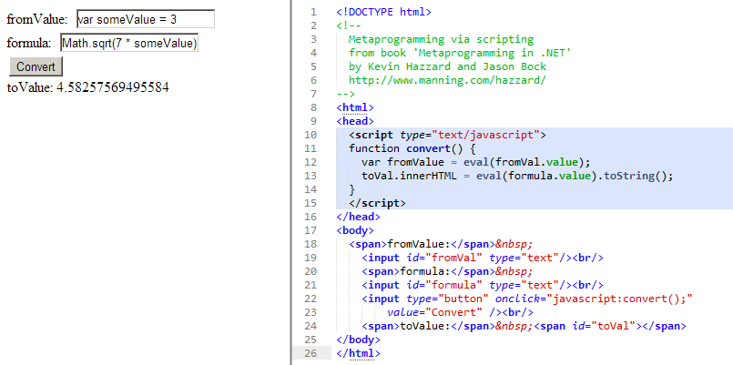

μετά: after, beyond, self, adjacent
metaprogramming: The classic definition for a metaprogram is “a computer program that writes new computer programs”
by @KevinHazzard and @JasonBock
JavaScript eval() as metaprogramming example
from Metaprogramming in .Net by @KevinHazzard and @JasonBock
Initial state

Simple multiplication

Injection values into local execution scope
C# is multiparadigm language
Languages are losing their classifications
Anders Hejlsberg talk about C# 3.0
- object-oriented: class-based and statically typed
- imperative
- C# 2.0: generic programming
- C# 3.0: functional/declarative:
LINQ,Rx - C# 4.0: dynamic:
DLR,microORM
Compilers are black boxes
Applying this technique leads to a self-hosting compiler.
TBD: schema HERE
Compiler as a Service
Metaprogramming by …
- Scripting
- Code generation
- Dynamic objects and λ-expression
- Reflection
{kind=link}
C# code and syntax tree
From Roslyn CTP
public object ReturnNullReferenceType() { return null; }

Search for return null;
Func<StatementSyntax, bool> returnNullStatement = PredicateBuilder .True<StatementSyntax>() // all return statements .And(s => s is ReturnStatementSyntax) // with expression .And(s => (s as ReturnStatementSyntax).Expression != null) // with expression "null" .And(s => (s as ReturnStatementSyntax).Expression.Kind == SyntaxKind.NullLiteralExpression) .Compile();
Search for return default(T);
Where T is reference type
ExpressionSyntax expressionSyntax = (statement as ReturnStatementSyntax).Expression; ISemanticModel semanticModel = await semanticModelAsync; return expressionSyntax != null && (semanticModel.GetTypeInfo(expressionSyntax).Type == null || semanticModel.GetTypeInfo(expressionSyntax).Type.IsReferenceType);
Installation instruction for introspection sample
Demo #02
{kind=link}
`eval()`-like for C# using Roslyn
var scripts = new [] { System.Console.ReadLine(), //fromValue: System.Console.ReadLine() //formula: }; var engine = new ScriptEngine(); // create script engine Array.ForEach( // add references to assembiles new[] { typeof(object).Assembly, GetType().Assembly }, @assembly => engine.AddReference(@assembly)); Array.ForEach( // import namespaces new[] { "System" }, @namespace => engine.ImportNamespace(@namespace)); Console.WriteLine(engine.GetType()); var session = engine.CreateSession(); // create session object resultModel = null; // INFO: scripts are using same session foreach(var script in scripts) { resultModel = session // process scripts .CompileSubmission<object>(script) .Execute(); }
ScriptCS execution sample

TBD: Add schema
{kind=link}
Note about "Code-as-Data"
- Roslyn vs. MEF
- Roslyn vs. DSL
Note about "Dynamic" programming
- Roslyn vs. λ-expression and DLR
- Assembly vs.
DynamicMethod
Corner cases
- Roslyn could not decompile IL
- Breaking changes with compilers
dynamickeyword supportasync/awaitkeywords- Implementation issues of current version
- Support: Dustin Campbell, Eric Lippert, Kevin Pilch-Bisson and whole team!
- Roslyn CTP license limitations
Nemerle
Compile-time macros
with possibility to modify Abstract Syntax Tree during compilation
Nemerle macro: compile- with run- time execution
// Test macros to show difference between compile time and runtime execution public macro TestMacro(inputAST) { Console.WriteLine("Compile-time execution: '{0}' of type {1}\n", inputAST, inputAST.GetType()); <[ Console.WriteLine("Run-time execution: {0} of type {1}\n", $inputAST, $inputAST.GetType()) ]>; }
Expected console output during build

New keyword fault
try { result = body(); } fault // here is a _new keyword_ `fault` only executed after exceptions { onFault(); } finally { onFinally(); }
fault macro definition
macro execute(body, actionOnFault, actionOnFinally) syntax ( "try", body, "fault", actionOnFault, "finally", actionOnFinally) { <[ try { $body; } catch { | e is System.Exception => { $actionOnFault; throw; } } finally { $actionOnFinally; } ]> }
Note about Nemerle
- Nemerle macro could manipulate AST, similar to Roslyn
- Nemerle implements only C# 3.5 syntax
dynamickeyword not supportedasync/awaitkeywords not supported- Syntax extension are not allowed in C# code, only at Nemerle
- All other non-syntax extension are allowed both in C# and Nemerle code